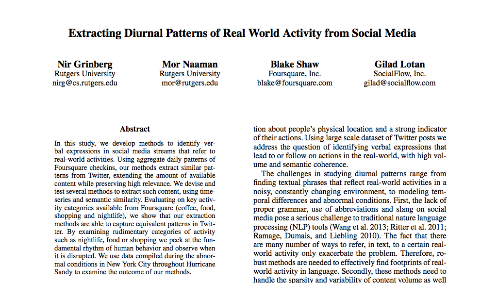
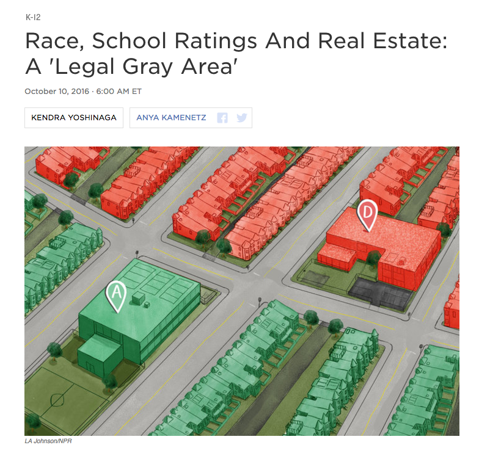

When the Storyteller
Shows Up in the Story
Lena Groeger | @lenagroeger
The Midwest
The Midwest: Census
Another Midwest
Another Midwest
The Midwest, by Bill Rankin
The Midwest, by Bill Rankin
The Data Doesn’t Speak for Itself
Crime Mapping
Million Dollar Blocks
Million Dollar Blocks
“Rather than looking at where crimes are committed, we looked at where prisoners live, and the maps that resulted showed the urban costs of incarceration and suggested how those dollars might be better spent on investing in communities.”
- Laura Kurgan
Street Bump

Hurricane Sandy
Hurricane Sandy
“Signal Problem”
Who Has a Smartphone?
Visualizations Are Not Neutral
Crimea: Russian vs. Ukrainian Users
Crimea: American Users
Minnesota Poverty Map

Minnesota Poverty Map: Redesign

Dots... or Not
School Ratings
The Problem with School Ratings & Real Estate
“Instead of making blatant comments about the racial composition of neighborhoods, many real estate agents told whites to avoid certain areas because of the schools.”
The Problem with School Ratings & Real Estate
The Problem with School Ratings & Real Estate
Users Are Not Always Who We Imagine
Popups
Popups
Video by Rose Eveleth
Glow

Glow
Siri
Siri

Facial Recognition
Photography: The "Shirley" card
Working to Fix It
Job Descriptions
Language Matters
Textio
Joblint
Nextdoor

Form Design Matters
Seek Out New Perspectives
Slack
“Our small choices as creators matter in powerful but sometimes subtle ways.”
-Diógenes Brito
Thanks.
Lena Groeger | @lenagroeger